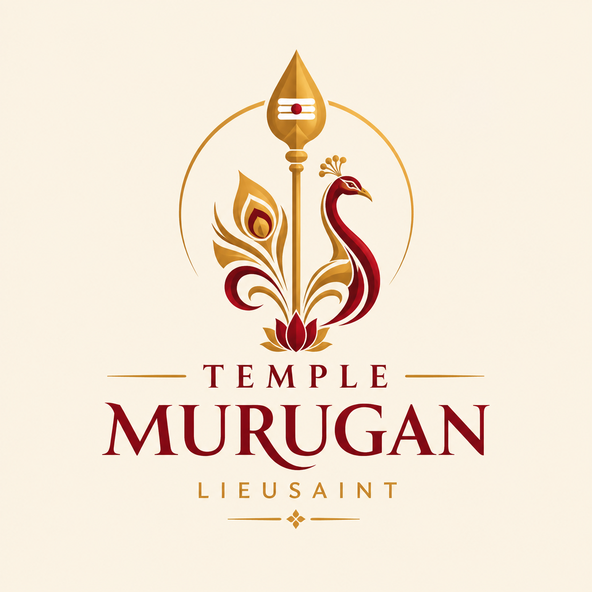

Aller au contenu
Site en préparation : le projet est actuellement en phase de conception.

Temple Murugan
Le projet
Avancement
Participer
Nous trouver
Contact
Adhérer
Faire un don
Page introuvable
Cette page n'existe pas ou a été déplacée.
Retour à l'accueil